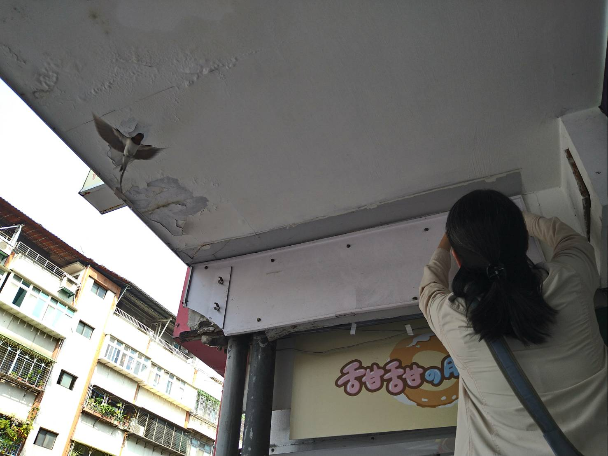
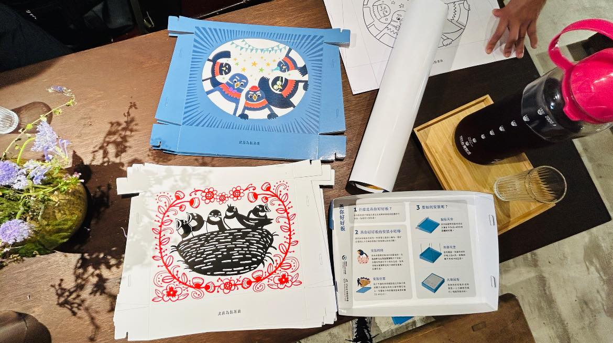
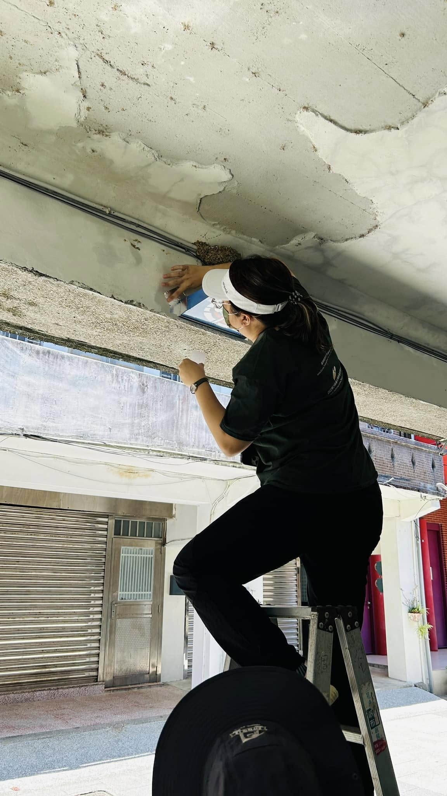
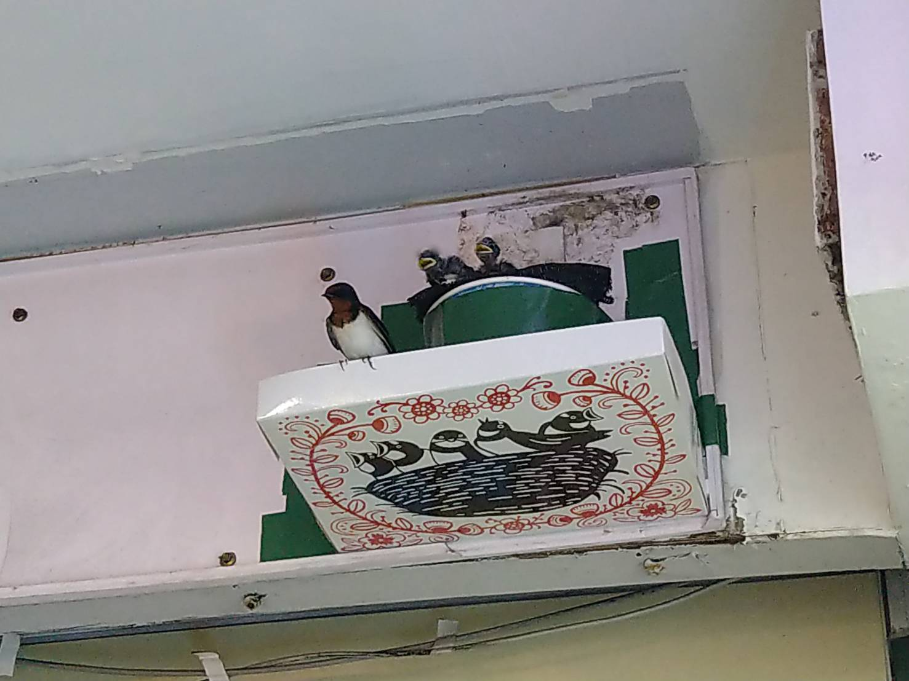
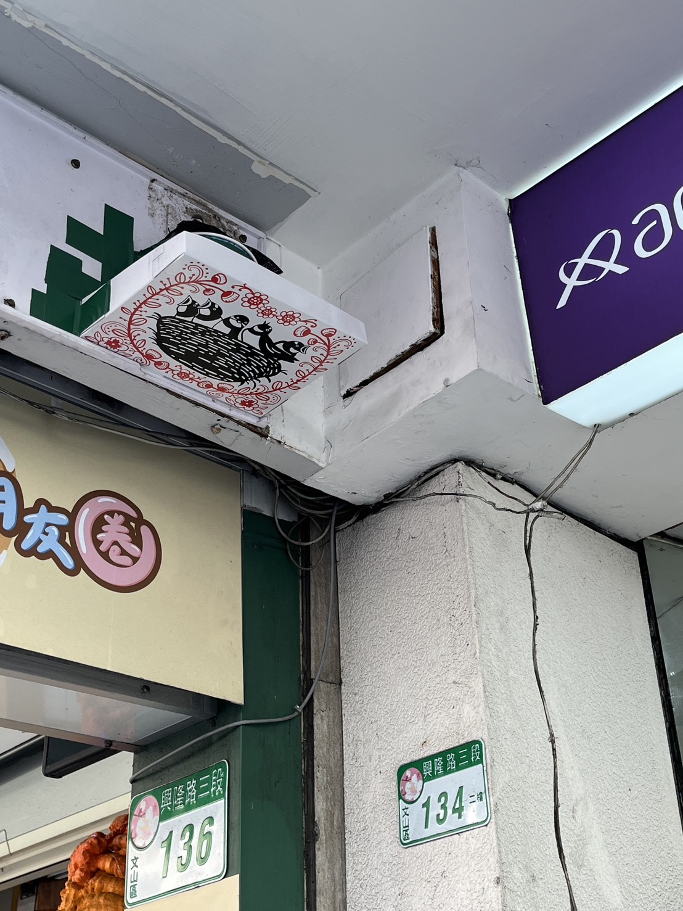

{{ t('hero_title') }}
{{ t('hero_desc') }}
{{ t('hero_3d_tip') }}
{{ t('swallow_name') }}
{{ t('swallow_feat1_title') }}
{{ t('swallow_feat1_desc') }}
{{ t('swallow_feat2_title') }}
{{ t('swallow_feat2_desc') }}
{{ t('swallow_feat3_title') }}
{{ t('swallow_feat3_desc') }}
{{ t('swallow_feat4_title') }}
{{ t('swallow_feat4_desc') }}
{{ t('swallow_note') }}
{{ t('sec1_title') }}
{{ t('sec1_p1') }}
{{ t('sec1_p2') }}

{{ t('sec1_img_caption') }}
{{ t('sec2_title') }}
{{ t('sec2_intro') }}
{{ t('sec2_card1_title') }}
{{ t('sec2_card1_desc') }}
{{ t('sec2_card2_title') }}
{{ t('sec2_card2_desc') }}
{{ t('sec2_card3_title') }}
{{ t('sec2_card3_desc') }}
{{ t('sec3_title') }}
{{ t('sec3_desc') }}

{{ t('sec3_img_caption') }}
✔ {{ t('benefit1_title') }}
{{ t('benefit1_desc') }}
✔ {{ t('benefit2_title') }}
{{ t('benefit2_desc') }}
✔ {{ t('benefit3_title') }}
{{ t('benefit3_desc') }}
{{ t('sec4_title') }}
{{ t('sec4_desc') }}

{{ t('photo1_title') }}
{{ t('photo1_desc') }}

{{ t('photo2_title') }}
{{ t('photo2_desc') }}

{{ t('photo3_title') }}
{{ t('photo3_desc') }}
{{ t('sec_map_title') }}
{{ t('sec_map_desc') }}
{{ t('sec_map_feat1_title') }}
{{ t('sec_map_feat1_desc') }}
{{ t('sec_map_feat2_title') }}
{{ t('sec_map_feat2_desc') }}
{{ t('sec_map_feat3_title') }}
{{ t('sec_map_feat3_desc') }}
{{ t('sec_map_cta_title') }}
{{ t('sec_map_cta_desc') }}
{{ t('sec_map_note') }}
{{ t('vket_title') }}
{{ t('vket_desc') }}